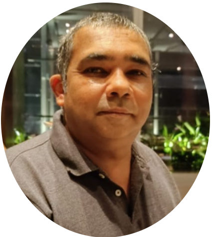

Nationality: Austrian (European Union)
Nationality: Austrian (European Union)Current Address (Sri Lanka): (6.8301° N, 79.8801° E)
Phone: +94766981521
e-mail rt.ratnayake @ gmail.com
|  | ruwan.ratnayakeI am a dedicated Operations & Support Engineer with over 10 years of customer success experience on various SaaS environments. |
| December 2022 - Present | COMPANY CONFIDENTIAL Leipzig, Germany (Work from Home in Sri-Lanka) |
Operations & Support Engineer | Providing technical support under the umbrella of ETL processes and the virtualization of data by setting-up, configuring, troubleshooting and debugging various eCommerce API connectors; and JDBC Drivers from numerous data sources in a SaaS environment. Advising, assisting, devising, troubleshooting and debugging SQL procedures and other scripts for clientelle to help them retrieve their anticipated datasets. JBoss/WildFly configuration and troubleshooting, JVM GC and heap dump analysis. |
| November 2013 - December 2022 | Odyssee Mobile NV Brussels, Belgium (Work from Home in Sri-Lanka) |
Level 3 HelpDesk | Helpdesk & Quality Assurance Primary Role: B2B Helpdesk. Resolving & troubleshooting Odyssee SaaS solutions for customers. Incident Management – bug replication, documentation and escalation to Development. Interaction with Product Owners advocating customer's change requests to meet their business requirements. Database analytics – Querying in SQL to troubleshoot data related problems, and reporting. Secondary Role: Quality Assurance – on User Interface of SaaS Solution for Android, Windows UWP & Website portal. Checking that bugs have been fixed that were reported by Helpdesk. |
| 2008 - 2009 | UPC Austria GmbH Vienna, Austria |
Business Intelligence Systems Analyst | Translating business needs into analytics/reporting requirements, and interfacing with internal team members to ensure successful delivery of BI reports from different departments. |
| 2006 - 2008 | CQR Payment Solutions GmbH, Bwin Group Vienna, Austria |
Jr. Fraud & Risk Analyst | B2C Gaming platform fraud and risk analytics
of gaming clients for various payment platforms. Risk checks applied during the processing of online payments, implementation of anti-fraud and security solutions that help merchants reduce fraud exposure. |
| 2005 - 2006 | Sagem Communications Austria GmbH Vienna, Austria |
Technical Support | Providing customers with dedicated support & solutions on printing and fax devices as well as TV set-top-boxes. |
| 2001 - 2003 | IBM UK Ltd./Lenovo UK Ltd Greenock, UK |
Quality Resolution Owner | Single-point-of-contact for clients who have been disappointed with IBM's performance in some way and have complained about their experience. Duties included turning complaining clients into loyal IBM clients by being responsive and proactive to meet their needs. |
| 1997 - 2001 | Johnson & Wales University Providence, Rhode Island, USA | MBA in International Business Bachelor of Science Hotel/Restaurant Institutional Management |
|
| 1994 - 1996 | ICHM Modul Vienna, Austria | Associate of Arts Hospitality Management | |
| 1982 -1992 | Vienna International School Vienna, Austria |
International Baccalaureate |
| Certifications: OCA Oracle Certified PL/SQL Developer |
Applications: Zendesk, Asana, Jira, Confluence, Slack, BitBucket, MS-Teams, Zoom, Office |
OS/Environments/Languages: Python, SQL, Windows, Linux, SSH, JBoss/WildFly Application Servers, SSMS, Amazon AWS, Microsoft Azure, HTML/CSS |
Databases: SQL Server, Snowflake, BigQuery, MySql, PostgreSQL |
| English: Spoken & Written - Native German: Spoken - Fluent, Written - Good |
| Nationality: Austrian (European Union) Current Address (Sri Lanka): (6.8301° N, 79.8801° E) Phone: +94766981521 e-mail rt.ratnayake @ gmail.com |
Photo by Pawel Czerwinski on Unsplash